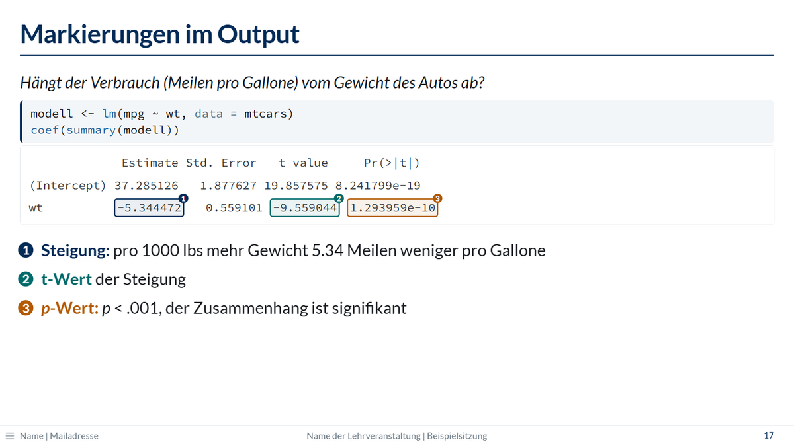
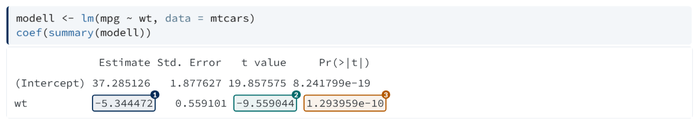
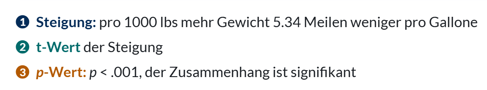
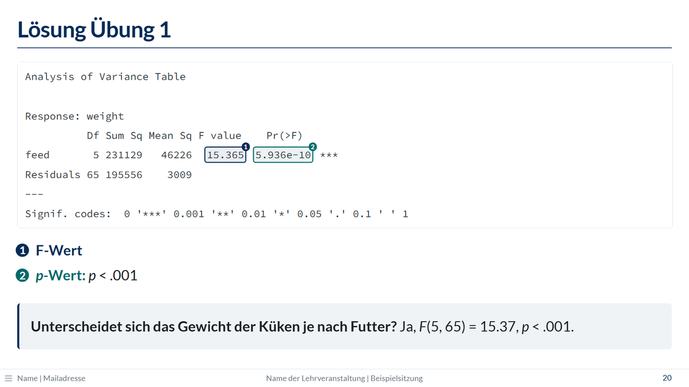

Markierungen
Zahlen im R-Output einrahmen, nummerieren und erklären

So geht’s
Den Chunk in einen Block mit der Klasse .markiert einpacken. In m1, m2, … steht jeweils der Text, der im Output eingerahmt werden soll:
::: {.markiert m1="-5.344472" m2="-9.559044" m3="1.293959e-10"}
```{r}
modell <- lm(mpg ~ wt, data = mtcars)
coef(summary(modell))
```
:::
. . .
- [1]{.nr} **Steigung:** pro 1000 lbs mehr Gewicht 5.34 Meilen weniger pro Gallone
- [2]{.nr} **t-Wert** der Steigung
- [3]{.nr} ***p*-Wert:** *p* < .001, der Zusammenhang ist signifikant
[1]{.nr} setzt in der Erklärung die passende Nummer. Am Anfang eines Listenpunkts ersetzt sie den Aufzählungspunkt, und Fettes direkt danach erscheint in derselben Farbe.

Arbeitsablauf
- Den Chunk zuerst ohne Markierung rendern.
- Die Zahlen aus dem Output kopieren, genau so, wie R sie ausgibt (auch mit Leerzeichen, z. B.
"X-squared = 293.37"). - Den Chunk in
::: {.markiert m1="…"}einpacken und die Erklärung schreiben. - Die Erklärung mit
. . .erst nach dem Output einblenden: erst schauen, dann erklären.
Regeln
- Gesucht wird der Text wörtlich, markiert wird sein erstes Vorkommen im Output. Erzeugt der Chunk mehrere Outputs, gilt das für jeden einzeln.
- Steht eine Stelle nicht im Output (z. B. weil sich Zahlen geändert haben), warnt das Rendern:
WARNUNG (markieren.lua): Markierung m2 "…" nicht im Output gefunden. - Überlappen sich zwei Stellen, bleibt die im Output weiter hinten stehende ohne Rahmen.
- Die Farben: 1 Dunkelblau, 2 Dunkelgrün, 3 Orange, 4 Violett, 5 Pink, 6 Blaugrau. Ab der siebten Markierung wiederholen sie sich (7 wie 1, 8 wie 2 usw.). Andere Farben: siehe Farben selbst wählen.
- Markierungen funktionieren auch mit
#| echo: false(nur Output). - Markierter Output hat mehr Zeilenabstand, damit die Nummern Platz haben. Langer Output passt dann eventuell nicht mehr mit Erklärung auf eine Folie; dann nur den nötigen Teil ausgeben, siehe Breiter Output.
Farben selbst wählen
Normalerweise hängt die Farbe an der Nummer: m1 ist dunkelblau, m2 dunkelgrün usw. Soll ein Begriff über mehrere Folien dieselbe Farbe behalten, z. B. der Achsenabschnitt immer grün wie in einer Grafik, legt farben= die Farben der Reihe nach fest:
::: {.markiert m1="-5.344472" m2="37.285126" farben="navy gruen"}
```{r}
coef(summary(modell))
```
:::
- [1]{.nr} **Steigung**
- [2]{.nr} **Achsenabschnitt**- Der erste Name färbt
m1, der zweitem2usw. Fehlen Namen, behalten die übrigen Markierungen ihre Standardfarbe. - Die Nummern
[1]{.nr}und der Fettdruck danach übernehmen diese Farben bis zur nächsten Folie. Stehen zwei markierte Blöcke auf einer Folie, gilt für jede Nummer der letzte Block davor. - Englischer Name des Attributs:
colors=.
Farbnamen: navy (Dunkelblau), hellblau, blaugrau, petrol (Grüngrau), teal (Dunkelgrün), gruen (wie .gruen), orange, violett, pink, rot (wie .rot), grau. Die Namen entsprechen rptu_farben für Grafiken; Orange ist für Rahmen und Schrift etwas dunkler.
Farbrollen
Wer dieselben Begriffe in vielen Foliensätzen markiert, kann ihnen in der _quarto.yml (oder im Kopf eines Foliensatzes) einmal eine Farbe zuordnen:
markierung-rollen:
intercept: gruen
slope: navyDanach geht farben="slope intercept". Englischer Name: highlight-roles:. Ein unbekannter Name führt beim Rendern zu einer Warnung, die Markierung behält dann ihre Standardfarbe: WARNUNG (markieren.lua): unbekannte Farbe oder Rolle "…" in farben= (m1 bleibt in der Standardfarbe).
Statt eines Farbnamens geht in den Rollen auch ein eigener Farbwert, z. B. passend zu einer Grafik:
markierung-rollen:
intercept: gruen
fixed: "#3470A8"- Der Farbwert braucht Anführungszeichen, sonst liest YAML ihn als Kommentar. Möglich sind sechs- und dreistellige Werte (
"#3470A8","#37A"). - Rahmen, heller Hintergrund, Nummer und Fettdruck sehen aus wie bei den Farbnamen. Bei hellen Farben wird die Nummer automatisch dunkel statt weiß gesetzt.
- Helle Farben sind als Schrift und am Beamer schlecht lesbar; kräftige, eher dunkle Töne funktionieren am besten.
- Eigene Farbwerte gibt es nur über Rollen, nicht direkt in
farben=.
Übungsfolge
Ein bewährter Ablauf für Übungen mit R, über drei Folien:
- Übungsfolie: Fragestellung, Datensatz und Aufgaben; eine Zusatzaufgabe mit KI bekommt
{.ki}. - Output-Folie mit
{.achtung}: nur der Output (#| echo: false), damit die Studierenden ihr Ergebnis vergleichen können. Das Warndreieck sagt: noch nicht weiterklicken. - Lösungsfolie: markierter Output, Erklärung und die Antwort im Kasten.
## Übung 1
**Datensatz:** *chickwts* (in R enthalten)\
**Fragestellung:** [Unterscheidet sich das Gewicht der Küken je nach Futter?]{.frage}
### Aufgaben
1. Verschaffen Sie sich einen Überblick über den Datensatz.
2. Berechnen Sie eine einfaktorielle Varianzanalyse.
### Zusatzaufgabe {.ki}
- Lassen Sie sich von einer KI R-Code für eine passende Grafik erzeugen.
## Output Übung 1 {.achtung}
```{r}
#| echo: false
anova(lm(weight ~ feed, data = chickwts))
```
## Lösung Übung 1
::: {.markiert m1="15.365" m2="5.936e-10"}
```{r}
#| echo: false
anova(lm(weight ~ feed, data = chickwts))
```
:::
- [1]{.nr} **F-Wert**
- [2]{.nr} ***p*-Wert:** *p* < .001
. . .
::: kasten
**Unterscheidet sich das Gewicht der Küken je nach Futter?** Ja, *F*(5, 65) = 15.37, *p* < .001.
:::